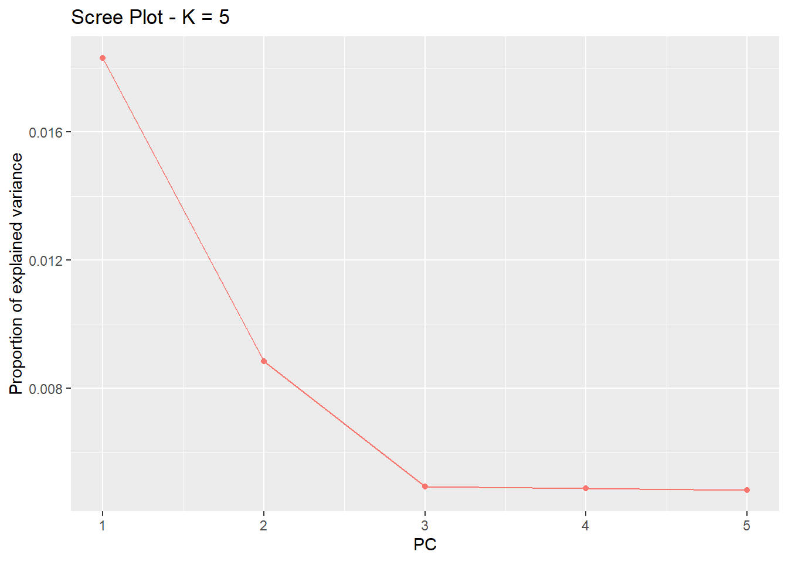
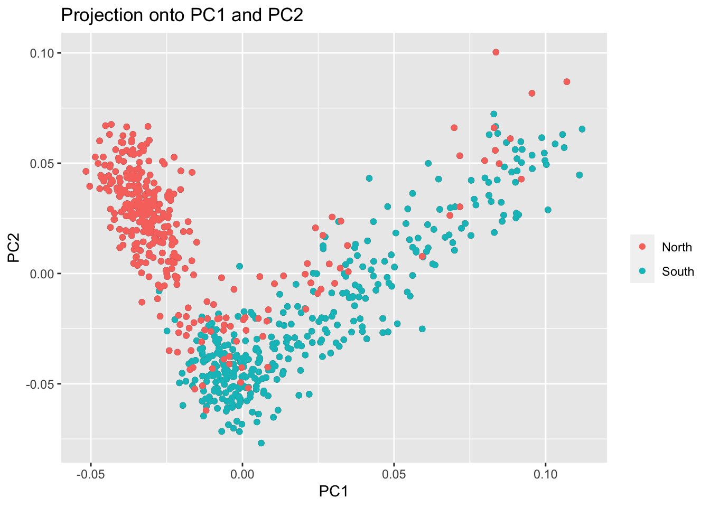
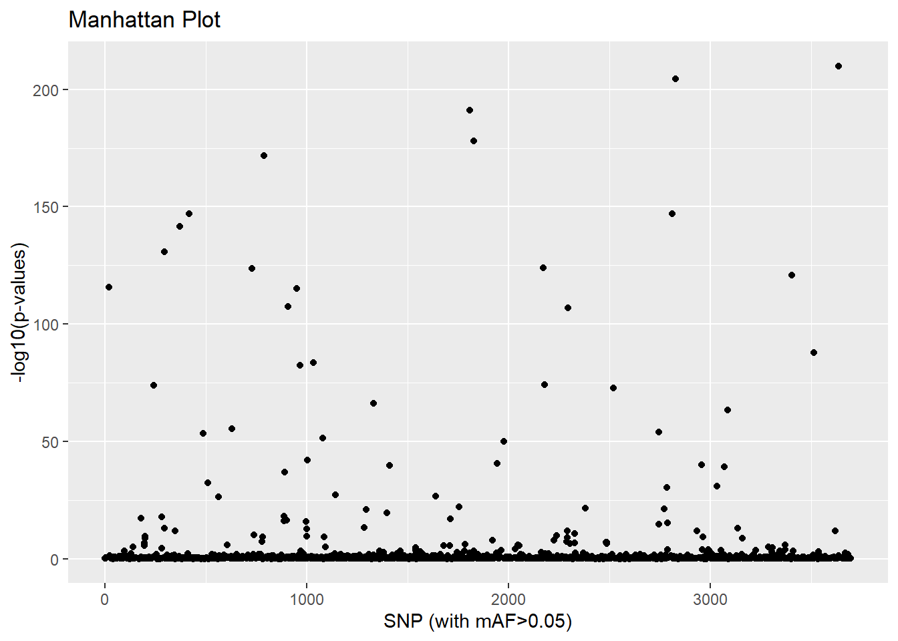
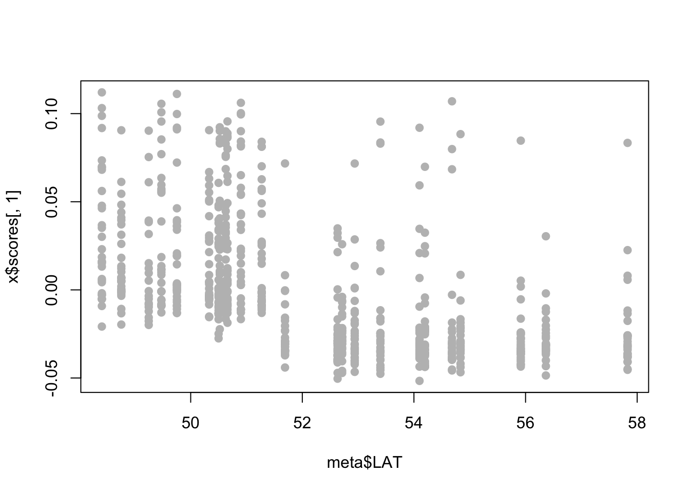
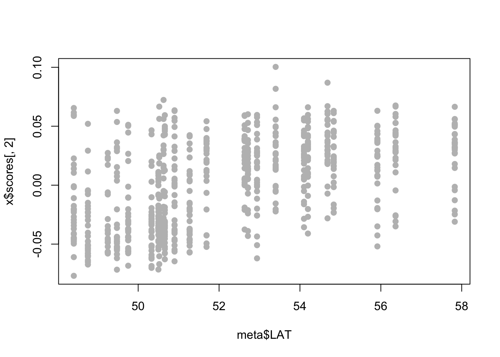
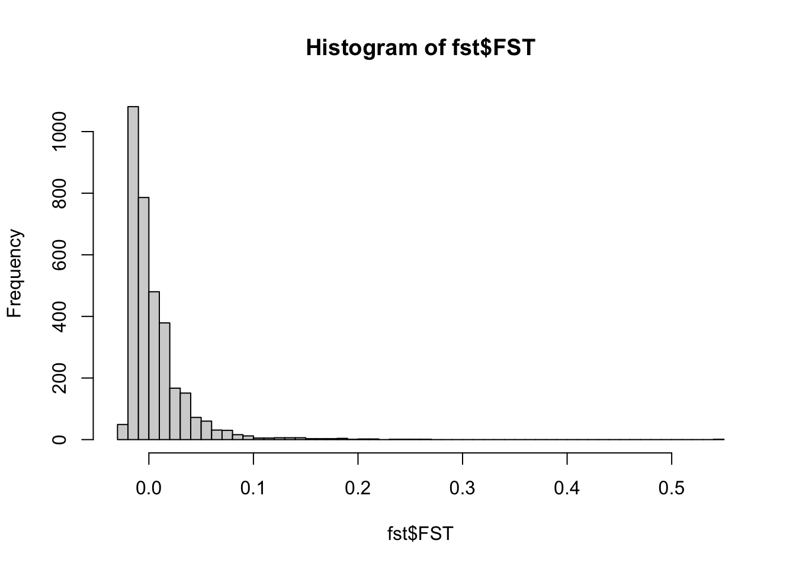
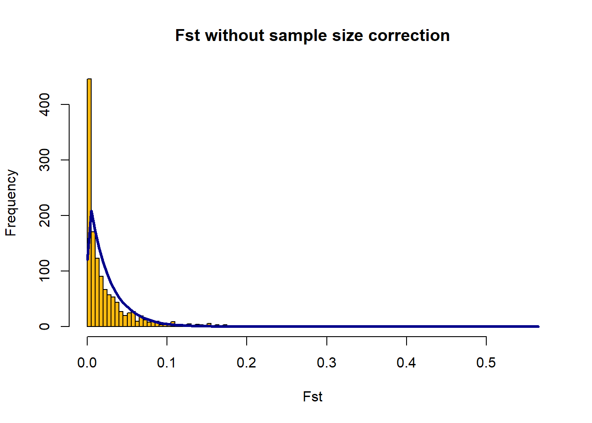
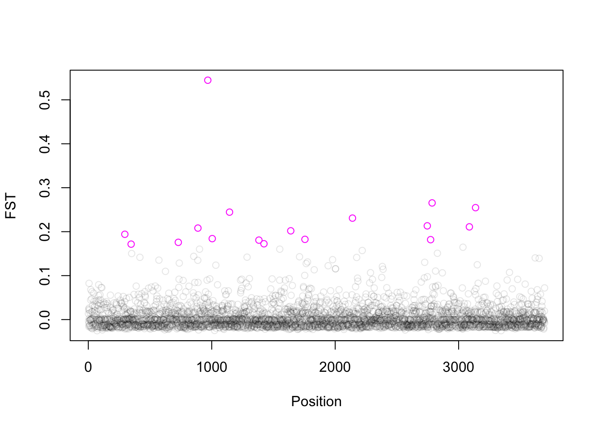

9 Week 8- Fst and outlier analysis
Last week we used PCA to take a broad look at whether populations were genetically distinct. This week we learn how to identify particular SNPs that are driving patterns of divergence between populations. These SNPs could represent signals of selection.
We will import the data and take a first look in bash and then we will do analysis and generate the plots in RStudio.
9.1 Download the data
We first need to download the data. Use the link below to download it to jetstream, and then us the tar command to un-compress it.
wget https://raw.githubusercontent.com/BayLab/MarineGenomicsData/main/week9_semester.tar.gz
tar -xzvf week9_semester.tar.gz
cd MarineGenomics
mv week9 Week8Again this week we are using the data from the Xuereb et al. paper on P. californicus. Our data consists of a SNP file in VCF format and a metadata file which tells you which site each sample came from.
Let’s navigate into the Week 7 directory and take a look at the vcf file:
cd MarineGenomics/Week8/
head filtered_3699snps_californicus.vcf9.2 Getting R set up
Now move off of Terminal and open R Studio. The first thing we need to do is download a few different packages. You only need to do this the first time you use each package on your machine.
Today we will be using two different packages: pcadapt and OutFLANK and both of them have some other packages they need (dependencies). While many packages can be downloaded in R using the install.packages function, some cannot because they are stored in specialty repositories. You can see that pcadapt can be downloaded from CRAN using the standard command, but OutFLANK and qvalue need to be downloaded from other sources.
To save all of the progress we make today, first create your own script in the Week8 folder for this week named “Week8Script.R”
If you have an error reading “Warning in install.packages : package ?BiocManager? is not available for this version of R” Go to “Help,” then “Check for Updates” and update your R version. You also may need to restart your R.
After you have successfully downloaded all the packages needed for today, go ahead and get a new R script started. Remember to do lots of commenting with # so it is easy to come back to your code later!
9.3 Finding outliers using pcadapt
Today we will use two different methods to find outliers. The first is based on PCA, which you learned about last week. For this you will use the pcadapt package. We will just use a few functions, but you can do a lot with this package; the documentation is found here
I always like to call the different R packages I plan to use at the very top of the script so I just have to call them once:
library(pcadapt)
library(vcfR)##
## ***** *** vcfR *** *****
## This is vcfR 1.12.0
## browseVignettes('vcfR') # Documentation
## citation('vcfR') # Citation
## ***** ***** ***** *****library(qvalue)Lets start by setting a working directory. I also like to define the paths to my input files at the top of the script, that way if I want to use a slightly different input file or if I want to share my script it’s easy to see how to change it. But first, set working directory to the Week 8 data from the drop down menu.
Let’s read in the genetic data from the VCF file. Because VCF is a common file format for SNP data, pcadapt comes with a special function for reading this type of file. You will get a warning message if you run on your own computer, but don’t worry about it.
## No variant got discarded.
## Summary:
##
## - input file: filtered_3699snps_californicus.vcf
## - output file: /var/folders/61/mrmzvfmj0jjbncnv31czp8lw0000gn/T//RtmpJgk2KZ/filea0be31368794.pcadapt
##
## - number of individuals detected: 717
## - number of loci detected: 3699
##
## 3699 lines detected.
## 717 columns detected.Now let’s read in the metadata. This is a CSV (comma separated values) file, which is a spreadsheet-style format that can be output from programs like Excel. The columns are separated with commas. Once you load the file, take a minute to examine the contents.
meta <- read.csv(meta.path)
head(meta)## ID SITE LAT LONG Group
## 1 CRA_1756 CRA 50.5212 -126.5646 South
## 2 CRA_1757 CRA 50.5212 -126.5646 South
## 3 CRA_1758 CRA 50.5212 -126.5646 South
## 4 CRA_1759 CRA 50.5212 -126.5646 South
## 5 CRA_1760 CRA 50.5212 -126.5646 South
## 6 CRA_1761 CRA 50.5212 -126.5646 SouthIMPORTANT NOTE: Here the samples in the VCF are in the same order as the samples in the metadata file. Triple check ahead of time that this is the case otherwise you may get some weird results!
Now that we’ve read in all the data, the first step for pcadapt is to make a PCA. Last week you used PCAngsd to do this, but there are many other packages that work as well. Here’s how we do it in pcadapt:
x <- pcadapt(input=genos,K=5)
plot(x,option="screeplot")
We can see from this plot that the vast majority of genetic variation can be explained by the first two principal components axes. Now we can plot the actual PCA. Here I will color by the Group.
plot(x,option="scores",pop=meta$Group)
You can see that there is separation between the North and South Groups, but it is not perfect. Now we want to see which of the >3000 SNPs is driving the variation we see on the PCA
plot(x,option="manhattan")
This gives us a visual idea of which SNPs might be associated with population differences. If we want to identify statistical outliers, we first need to adjust the p-values:
qval <- qvalue(x$pvalues)$qvalues
outliers <- which(qval<0.1)
length(outliers)## [1] 1439.4 pcadapt Exercises
Practice Questions
- Perhaps we are particularly interested in SNPs associated with latitude. A first step might be to ask whether either of our PC axes represent latitudinal variation.
x$scoresgives you the PC loadings for each sample along the first and second PC axes. Combine these with the metadata to see whether either PC axes are correlated with latitude (for our purposes you can just visualize the relationship, you don’t have to run the statistics.)
Solution
plot(x$scores[,1]~meta$LAT,pch=19,col="gray")
plot(x$scores[,2]~meta$LAT,pch=19,col="gray")
- If we are only interested in SNPs associated with a single principal component, we can get pcadapt to give us correlation scores for each PC axis independently. Using the guidance provided in the documentation here make a manhattan plot of SNPs driving variation along the first principal component only
Solution
x_cw <- pcadapt(genos,K=2,method ="componentwise")
plot(x_cw,option="manhattan",K=2)9.5 Using Fst to find outliers
Another way to look for signals of selection is to use Fst. Fst is a measure of genetic differentiation between populations. When we use Fst to test for signals of selection, we ask if any SNPs are more divergent than expected given the genome-wide differentiation.
Let’s start by loading a couple libraries:
library(OutFLANK)
library(vcfR)We use the vcfR library to load the vcf file and extract just the genotypes. Remember there is a lot of information in VCF files, probably more than we want. vcfR has many different functions for extracting just some information so that you can use it any way you want
data <- read.vcfR(vcf.path)## Scanning file to determine attributes.
## File attributes:
## meta lines: 9
## header_line: 10
## variant count: 3699
## column count: 726
##
Meta line 9 read in.
## All meta lines processed.
## gt matrix initialized.
## Character matrix gt created.
## Character matrix gt rows: 3699
## Character matrix gt cols: 726
## skip: 0
## nrows: 3699
## row_num: 0
##
Processed variant 1000
Processed variant 2000
Processed variant 3000
Processed variant: 3699
## All variants processedgeno <- extract.gt(data)
dim(geno)## [1] 3699 717head(geno[,1:10])## CRA_1756 CRA_1757 CRA_1758 CRA_1759 CRA_1760 CRA_1761 CRA_1762 CRA_1763
## 7_11 "0/0" NA "0/0" "0/0" "0/0" "0/0" "0/0" "0/0"
## 12_31 "0/1" "1/1" NA "0/0" "0/0" NA "0/0" "0/0"
## 10_7 "0/0" "0/0" NA "0/0" "0/0" NA "0/0" "0/0"
## 10_18 "0/0" "0/0" NA "0/0" "0/0" NA "0/1" "0/0"
## 10_32 "0/0" "0/0" NA "0/0" "0/0" NA "0/0" "0/0"
## 101_21 "0/0" "0/0" "0/0" NA "0/0" "0/0" "0/0" "0/0"
## CRA_1764 CRA_1765
## 7_11 "0/0" "0/0"
## 12_31 "0/1" "0/0"
## 10_7 "0/0" "0/0"
## 10_18 "0/0" "0/0"
## 10_32 "0/0" "0/0"
## 101_21 "0/0" "0/0"Check out the OutFLANK manual here. Notice that as our genotypes look like 0/0, 0/1, and 1/1. But OutFLANK wants them to be 0, 1, or 2. The code below fixes this problem:
G <- geno #we are doing this because we will be running a lot of different things with G, and if we mess up we want to be able to go back to geno
G[geno %in% c("0/0")] <- 0
G[geno %in% c("0/1")] <- 1
G[geno %in% c("1/1")] <- 2
G[is.na(G)] <- 9
tG <- t(G)
dim(tG)## [1] 717 3699Now tG should be in the input format OutFLANK needs, with SNPs as columns and individuals as rows. Now we can calculate Fst for each SNP.
For this analysis we are just going to calculate Fst between the northernmost and the southernmost populations. This is a good time to practice our subsetting skills!
For the second command: we are only taking the rows of tG that are “true,” or only taking the rows of tG that have one of these two populations “TBL” or “AK4”
In the third command we are just using a slightly different method for subsetting with the command “subset.” If we subset “meta” we should end up with 62 rows (SNPs) and 2 columns (populations).
subpops <- c("TBL","AK4")
subgen <- tG[meta$SITE%in%subpops,] #subset method 1
submeta <- subset(meta,SITE%in%subpops) #subset method 2Now we should check if these two vectors are identical:
identical(rownames(subgen),as.character(submeta$ID))## [1] TRUESince our genotype matrix and our metadata matrix are in the same order, we can combine them.
Now we can calculate Fst between these two populations: locusNames= names our loci 1,2,3 etc popNames= names our populations with the “SITE” labels
fst <- MakeDiploidFSTMat(subgen,locusNames=1:ncol(subgen),popNames=submeta$SITE)## Calculating FSTs, may take a few minutes...head(fst)## LocusName He FST T1 T2 FSTNoCorr
## 1 1 0.16004925 0.013505690 0.0010989159 0.08136689 0.0329945019
## 2 2 0.32209911 -0.003522955 -0.0005712682 0.16215600 0.0137035701
## 3 3 0.03388823 0.023105548 0.0003994330 0.01728732 0.0396716826
## 4 4 0.17167063 -0.015959520 -0.0013698559 0.08583315 0.0001018514
## 5 5 0.05038644 -0.008598599 -0.0002175528 0.02530095 0.0086381886
## 6 6 0.08387196 0.082459876 0.0036351166 0.04408346 0.0972364381
## T1NoCorr T2NoCorr meanAlleleFreq
## 1 2.684676e-03 0.08136737 0.9122807
## 2 2.222222e-03 0.16216374 0.7982456
## 3 6.858711e-04 0.01728868 0.9827586
## 4 8.742893e-06 0.08583971 0.9051724
## 5 2.185723e-04 0.02530303 0.9741379
## 6 4.286694e-03 0.04408526 0.9561404hist(fst$FST,breaks=50)
summary(fst$FST) #highest FST is higher than the mean (which is a good sign)## Min. 1st Qu. Median Mean 3rd Qu. Max. NA's
## -0.0252 -0.0124 -0.0010 0.0054 0.0146 0.5446 333Reminder: He= heterozygosity FST= measure of differentiation
Once we’ve calculated Fst between the two populations for each SNP individually, we want to determine whether some SNPs are statistical outliers - that is, more differentiated than we would expect. OutFLANK does this by fitting a Chi-Squared distribution to the data and looking to see if the tails of the Chi-Squared distribution have more SNPs than expected:
OF <- OutFLANK(fst,LeftTrimFraction=0.01,RightTrimFraction=0.01,
Hmin=0.05,NumberOfSamples=2,qthreshold=0.01)
OutFLANKResultsPlotter(OF,withOutliers=T,
NoCorr=T,Hmin=0.1,binwidth=0.005,
Zoom=F,RightZoomFraction=0.05,titletext=NULL) FSTbar=mean FST across the whole genome The yellow bars are the histogram of the FST values The blue line is the Chi-Squared Distribution fit to the data It is hard to fit the Chi-Squared Distribution to a population with high gene flow, aka this method doesn’t work great for marine species We will just progress forward, but keep this in mind for any future work you may do.
It’s a little hard to tell from these plots, but there may be some SNPs with high Fst even where the distribution predicts there should be none. To find these SNPs, we ask which SNPs are statistical outliers?
P1 <- pOutlierFinderChiSqNoCorr(fst,Fstbar=OF$FSTNoCorrbar,
dfInferred=OF$dfInferred,qthreshold=0.05,Hmin=0.1)
outliers <- P1$OutlierFlag==TRUE #which of the SNPs are outliers?
table(outliers)## outliers
## FALSE TRUE
## 1273 17This doesn’t add up to 3699… so some of the SNPs were not even tested. This is okay because there is an internal program that doesn’t test any SNPs with extremely low heterozygosity.
Looks like there are 17 outlier SNPs. Now we can make a manhattan plot! We can even plot the outliers in a different color:
plot(P1$LocusName,P1$FST,xlab="Position",ylab="FST",col=rgb(0,0,0,alpha=0.1))
points(P1$LocusName[outliers],P1$FST[outliers],col="magenta")
9.6 OutFLANK Practice
Practice Questions
- We tested for Fst outliers between just the northernmost and southernmost sampling sites. Do we get more outliers that we expect between any two sites? Choose two sites within the northern and southern groups and see if there are any outliers.
Solution
subpops <- c("AK3","AK4")
subgen <- tG[meta$SITE%in%subpops,]
submeta <- subset(meta,SITE%in%subpops)
identical(rownames(subgen),as.character(submeta$ID))## [1] TRUEfst <- MakeDiploidFSTMat(subgen,locusNames=1:ncol(subgen),popNames=submeta$SITE)## Calculating FSTs, may take a few minutes...OF <- OutFLANK(fst,LeftTrimFraction=0.01,RightTrimFraction=0.01,
Hmin=0.05,NumberOfSamples=2,qthreshold=0.01)
P1 <- pOutlierFinderChiSqNoCorr(fst,Fstbar=OF$FSTNoCorrbar,
dfInferred=OF$dfInferred,qthreshold=0.05,Hmin=0.1)
outliers <- P1$OutlierFlag==TRUE
table(outliers)## outliers
## FALSE TRUE
## 1284 1#FALSE TRUE
# 1284 1